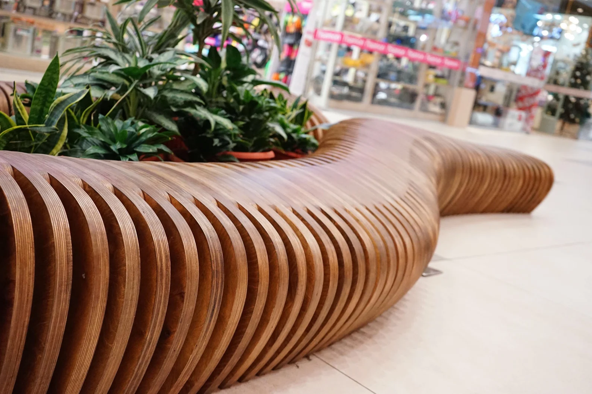

Estante paramétrica com formas fluidas e elegância funcional.Mesa de centro com design curvo, unindo arte e praticidade.Relógio decorativo com estrutura paramétrica e estilo moderno.

Banco paramétrico com design orgânico, integrando vegetação natural.